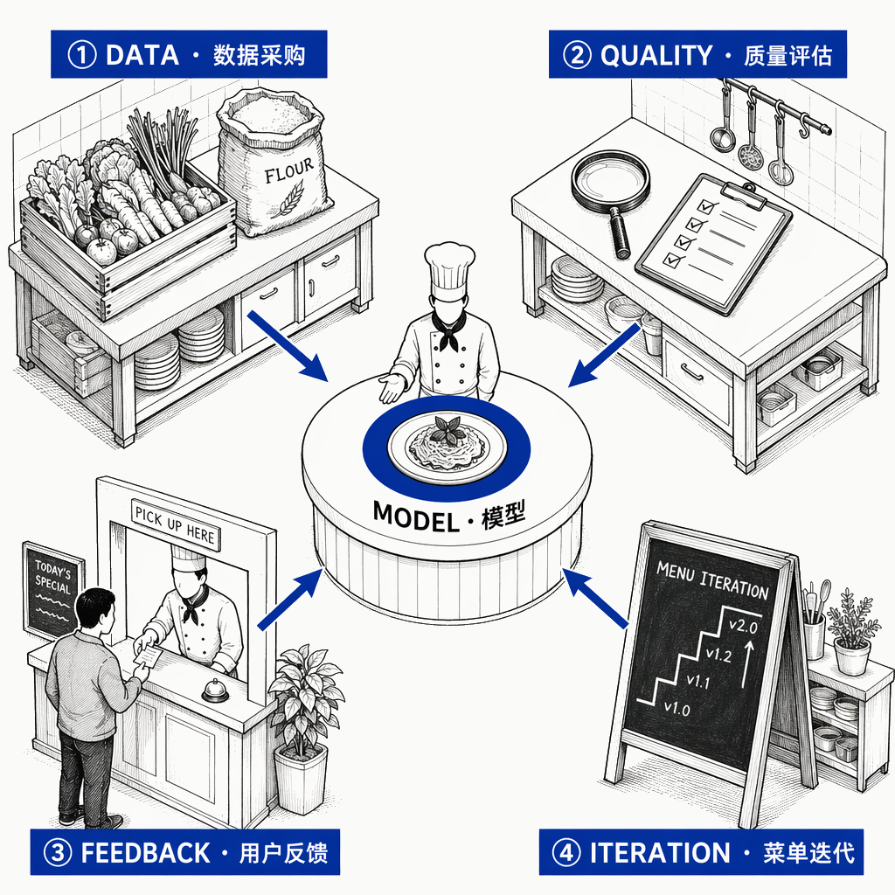

AI Knowledge · Beginner Series
Day 04
Indigo Porcelain
每天吃透一个
AI 知识点
LLMOps
大模型运维体系
为什么同一个模型,别人用起来效果炸裂,你用起来平平无奇?
LLMOPS · 从能跑到可控
AI Native · 004
Indigo Porcelain
LLMOps
大模型运维体系
为什么同一个模型,别人用起来效果炸裂,你用起来平平无奇?
打个比方

Fig. 01 · 后厨的四个工位
好厨子(模型)只是第一步。采购、品控、反馈、菜单迭代,这些"后厨管理"做不好,厨子再厉害也白搭。
缺 LLMOps 的典型症状
输出忽高忽低同一个 prompt,昨天答得很好,今天给客户的回复就翻车了。
成本悄悄飙涨没人盯着 token 消耗,月底账单出来才发现已经超预算两倍。
安全问题频发用户绕过 prompt,模型说了不该说的话,事后才知道没有过滤层。
某电商 AI 客服
Before · 上线初期
prompt 硬编码
在代码里
After · 引入 LLMOps
prompt 可配置
输出有评分
Action · 今天检查一件事
答案是 A?从把 prompt 拿出代码开始 —— 这就是引入 LLMOps 的第一步。